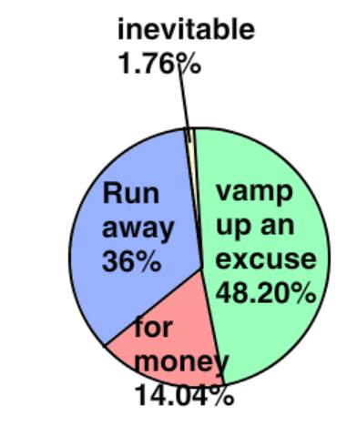

<body>
  <h1>CMS 코딩쌤 X파일<h1><br><br><br><br>
  <h1>선생님이 딸기 농장에 간다.<h1>
  <ol>
<h6>"그 외의 이야기"<h6>
<small><li>세금을 선생님이 사용한다?</li>
<li>정부에서 지원한다?</li>
<li>정부에서 추가로 돈을 준다?<small></li>
  <strong>일단 선생님이 간다는 곳(9월)<br>
    
<h1>정부의 지원을 받고!!    간다고 합니다.<h1>
<h4>그래서 여기서 생각할 것은...<h4><br><br><br><br><br>
<h3>이것은!<h3>
    <h4>핑계인가?<h4><br>
      <h1>핑계라고 예상하는 이유<h1><br>
      <li><h6>학원에서 도망갈 수 있다.<h6></li>
        <li><h6>선생님이 그토록 싫어하는 학생들을 안 볼 수 있다.<h6></li>
          <li><h6>정부에게서 농사를 이유로 돈을 뜯어낼 수 있다.<h6></li>
<li><h6>사람들이 내는 세금을 마음대로 쓸 수 있다.<h6></li>
  <li><h6>정부에서 개인 비용을 준다(약 몇 십 만원)<h6></li>
    <li><h6>정부에서 무료로 1억 5천만원을 준다.<h6></li>
      <h2>이러한 이유로 인하여 선생님은 딸기 농사하러 가는 것이 아니라! 딸기 농사하러 도망간다고 생각한다.<h2><br><br><br><br><br><br><br><br><br><br>
<h1>자료<h1><br><br>
  <h3>그래서 CMS 코딩을 다니는 학생 136명을 상대로 직접 설문조사를 한 결과<h3>
    
    <h6>           (출처: www.whereisthecmscodingxfile.com)<h6>
<h3>98.24%의 학생들이 선생님이 도망간다 또는 선생님이 핑계를 댄다고 답변했다.<h3>
  
  <h3>또 CMS에 다니는 A씨(14세)를 상대로 인터뷰를 한 결과 선생님은 도망가는 것이고 돈을 뜯어내려는 행위이며 딸기 농장은 핑계일 뿐이다.라고 답했다.<h3><br><br><br><br><br>
    <h1>선생님의 횡포<h1>
      <h3>선생님은 평소에도 학생들에게 치킨을 시켜놓고 못 먹게 하는 고문을 하고(이런 식으로)<h3>
        
        <h3>뭐하러 코딩하냐는 말을 하기도 했다.<h3>
          
          <h3>학원의 규칙을 따르지 않고 학원 선생님의 도리를 지키지 않았다. 또 자신이 사장이 될 것이라면서 CMS를 모욕했다.<h3>
            
            <h3>자신과 트럼프가 같은 지위라고 생각하고 트럼프를 모욕하며 미국을 모욕했다.<h3>
              <h3>또 학생들에게 쉬는 시간을 주지 않고 혹사시키며 꿈을 짓밟고 좌절을 맛보게 했다.<h3>
                <h3>항상 학생을 "이 자식, 저 자식"이라고 부르고 학생의 도움 요청을 무시했다.<h3><br><br><br><br><br><br>
                  <h1>학생들의 반응<h1><br>
                    <h3>실제 학생들이 CMS 코딩에서 나온 후 뇌를 영상 촬영하여 본 결과 별로 충격적이지 않는 사실을 알 수 있었다.<h3>
                      <h4>학생 A(14세)를 대상으로 나온 결과이다.<h4>
                        
                          <h6><P ALIGN=CENTER>         (출처: www.whereisthecmscodingxfile.com)<h6></P>
                        <h3>이것을 그래프로 나타낸다면<h3>
                          
                            <h6>           (출처: www.whereisthecmscodingxfile.com)<h6>
<h3>이런 모습이 될 수 있다.<h3><br><br><br>
  <h2>시간이 지날수록 분노와 스트레스, 절망이 아주 가끔씩 줄어들기는 하지만 전체적으로 크게 늘어나고 또 흥미는 점점 떨어지는 것으로 나타났다.<h2><br><br>
<h3>학생 B(13세)를 대상으로 실험을 한 번 더 진행했다.<h3>
  
    <h6>           (출처: www.whereisthecmscodingxfile.com)<h6>
  <h3>또 그래프로 나타낸다면<h3>
    
      <h6>           (출처: www.whereisthecmscodingxfile.com)<h6>
    <h3>이렇게 나타났으며 결과는 학생 A와 비슷하다. 이외에 26명의 학생을 대상으로 실험을 진행했지만 결과는 달라지지 않았다.<h3>
      <h2><strong>따라서 선생님의 횡포는 시간이 지날수록 심해지며 아이들의 흥미는 점점 떨어진다.<h2><strong>
<h6>다시 학생들에게 코딩선생님이 가시는 것에 대해 어떻게 생각하는지 물었더니 대다수의 학생들이 좋다 같은 긍정적인 답변을 했다.<h6>


    </div>

  </datalist>
